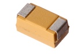

SMD (2312) 22 uF Capacitor (Tantalum) 25v - CTS3U022
Summary
Name: SMD (2312) 22 uF Capacitor (Tantalum) 25v
ID: CAPT-2312-X-UF22-VA
Hex ID: CTS3U022
WebPage: https://github.com/oomlout/oomlout-OOMP/wiki/CAPT-2312-X-UF22-VA
Short URL: http://oom.lt/CTS3U022
Revision History: https://github.com/oomlout/oomlout-OOMP/blob/master/parts/CAPT-2312-X-UF22-VA/
| Type |
Size |
Color |
Description |
Index |
CAPT
Capacitor (Tantalum) |
2312
SMD (2312) |
X
|
UF22
22 uF |
VA
25v |
Images

About
This part is awaiting a description.
Specifications
| Info |
Value |
| Type |
Capacitor (Tantalum) |
| Size |
SMD (2312) |
| Description |
22 uF |
| Index |
25v |
| Width |
3.20 mm |
| Length |
6.00 mm |
| Maximum Voltage |
25V |
| Tolerance |
10% |
Extra Details
Page last updated: 2016-04-03 01:08
Spotted a mistake, want to add more? Let us know oomp@oomlout.com
All images and resources are licensed [CC BY-SA] unless otherwise stated (ie. the datasheets)